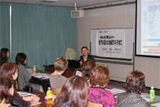

10月21日午後、第50回埼玉県消費者大会の分科会が埼玉会館小ホールと各会議室で開かれ、全体で約600人が参加しました。助言者の報告、各団体の取り組みや事例報告、参加者の意見交流、質疑がおこなわれ、それぞれ課題を深めました。
＜第1分科会：食＞ 217人参加
日本の食を守ろう
安全・安心は大丈夫？ TPPと輸入食品
助言者 八田 純人さん
（農民運動連合会食品分析センター所長）
報 告 木村さん（埼玉産直センター）
山口さん（山口農園）
山水さん（パルシステム埼玉） |
|
＜第2分科会：医療・社会保障・くらし経済＞ 111人参加
|
私たちのくらしにかかわる社会保障って？
～どうなっちゃうの年金・医療介護・子育て～
助言者 芝田 英昭さん
（立教大学コミュニティ福祉学部 教授） |
＜第3分科会：消費者問題＞ 105人参加
なぜ減らない？消費者被害～だます側のテクニックって？～
寸 劇 杉戸町くらしの会（寸劇グランプリ受賞チーム）
助言者 消費生活相談員
（埼玉県消費生活コンサルタントの会） |
|
＜第4分科会：環境＞ 70人参加
|
いま改めてエネルギー選択の方向性を考える
助言者 歌川 学さん （産業技術総合研究所 主任研究員）
報 告 森さん （所沢消団連）
|
＜第5分科会：教育・子育て＞ 70人参加
―みんなで考えよう―
世代を超えた地域での子育て
助言者 森田 明美さん （東洋大学社会学部 学部長）
報 告 春日部市幸松婦人会、蕨市旭町婦人会 |
 |
|